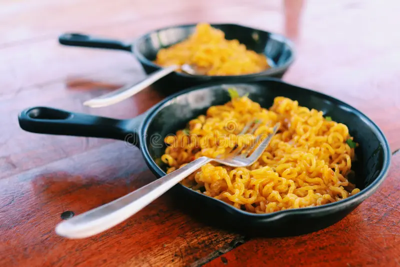

Prep time: 2 minutes
Cook time: 5 minutes
Servings: 1 Person

Ingredients
- 1 packet Maggi noodles
- 1.5 cups water
-
Maggie tastemaker (masala packet)
- Contains: salt, spices, dehydrated veggies
-
Optional add-ons
- 1 egg
- Chopped Onions
- Green Chilies
- Butter (1 tsp)
Instructions
- Boil 1.5 cups of water in a pan.
- Add maggie noodles to the boiling water.
- Add a taste maker and stir well
- Cook for 2 minutes, stirring occasionally.
- Optional: Crack an egg in and stir quickly for egg Maggie.
- Remove from heat. Let it sit for 30 seconds.
- Serve hot and enjoy!
Pro tips
- Less water = thicker, dried Maggi
- More water = soupy Maggi - great in winters!
- Add butter at the end for extra richness
- Never overcook - 2 minutes max!